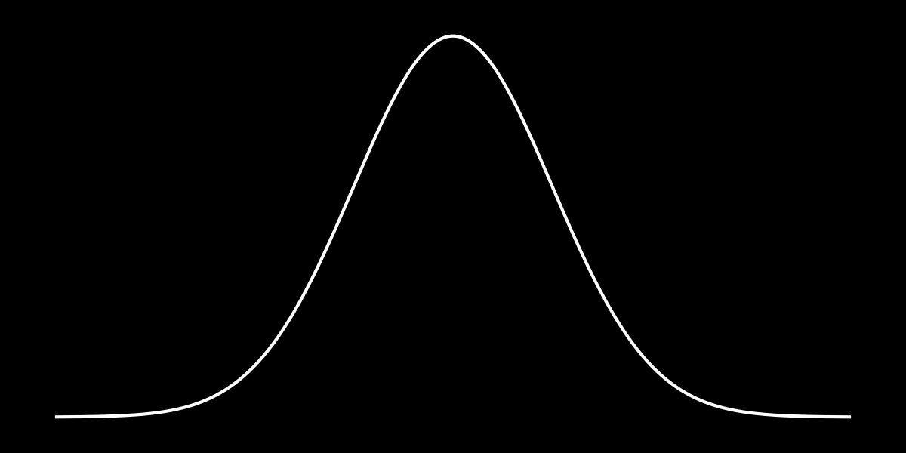
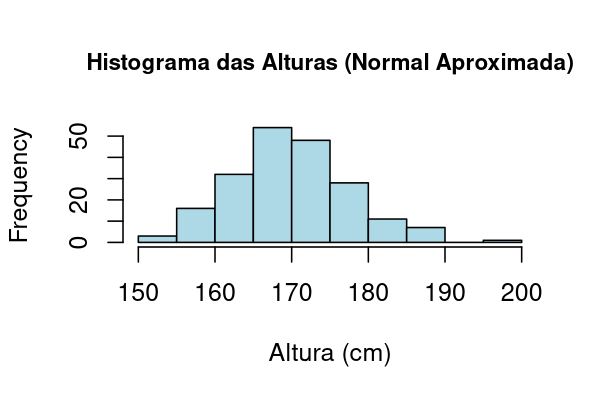
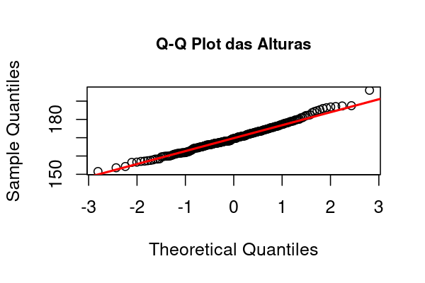
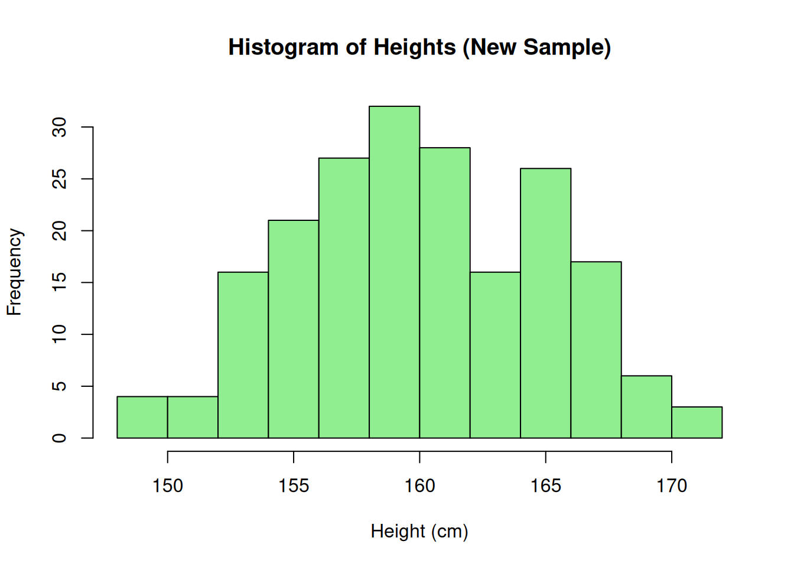
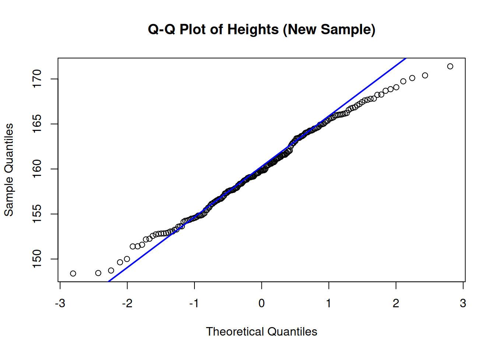
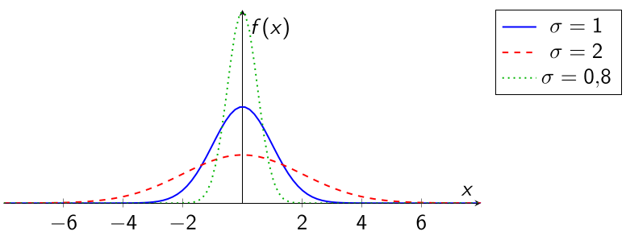

← Course Index · ← Statistics Courses · ← Statistics Section

In this part, we will address the assessment of normality in real data, both in a visual way (histograms, Q–Q plots) and in a theoretical way (Law of Large Numbers and Central Limit Theorem). Approximate normality is the bridge between descriptive analysis and statistical inference.
📌 Objectives of this post
In this part, based on Levine et al., Statistics for Managers Using Microsoft Excel, we explore when and how the normal distribution can be used as a valid approximation in real-world contexts.
🎯 Objectives:
🧠 Let’s deepen our understanding!
We call approximately normal distributions those variables that, even without following the normal curve exactly, present enough characteristics for statistical methods based on normality to be applied.
👉 Main characteristics:
❗ Important notes:
📌 Typical examples:
✅ Approximately normal variables:
❌ Non-normally distributed variables:
📌 Note: Some variables can approach normality after transformations, such as logarithm or square root.
Examples of variables with approximately normal distribution:
❗ Important: Even if the actual distribution is not perfectly normal, a normal approximation is often sufficient for practical applications and statistical inference.
📊 The Q–Q Plot (Quantile–Quantile Plot) is a chart used to compare the distribution of sample data with a theoretical distribution — usually the normal.
🎯 Objectives:
🔎 How to interpret:
📌 Note: The Q–Q Plot is especially useful with large samples, since small imperfections are expected and do not compromise the overall interpretation.
👉 Situation:
📈 Chart:

Chart generated in R from 200 simulated observations of \(X \sim \mathcal N(170,\,8^2)\).
🔎 Interpretation: The histogram shows a bell shape, symmetric around the mean. Small variations are expected, but the approximation to the normal distribution is very good.
👉 Situation: The same sample of 200 adult heights (\(\mu=170,\; \sigma=8\)) was used to build the Q–Q plot.
📈 Chart:

Chart generated in R with 200 simulated observations of \(X \sim \mathcal N(170,\,8^2)\).
🔎 Interpretation:
🎯 Objective: Generate a sample of heights and visualize the histogram and the Q–Q plot directly in RStudio.
📌 Note: The code generates the plots directly in the RStudio window.
🎯 Objective: Build the Histogram and the Q–Q Plot of the height sample using RStudio.
👉 (1) Generate the sample:
rnorm() to create random data from a normal distribution.👉 (2) Build the Histogram:
hist() function to visualize the data distribution.👉 (3) Build the Q–Q Plot:
❗ Important: Visualize and interpret the plots on screen before applying statistical methods!
Before applying any statistical technique, it is essential to explore the data visually. Plots such as histograms and Q–Q plots help verify fundamental assumptions, like normality, the presence of outliers, and symmetry of the distribution.
Applying statistical tests without this prior check may lead to misleading or statistically invalid conclusions. Visualization allows you to detect patterns, deviations, and anomalies that numbers alone may not reveal—therefore, it is a critical step in the data analysis workflow.
🎯 Objective: Apply what you’ve learned to generate new plots in RStudio.
🧠 📝 Task:
👉 (1) Generate a new sample of 200 normally distributed observations with:
👉 (2) Build:
👉 (3) Compare visually:
💡 Hint: Use the same functions: rnorm(), hist(), qqnorm(), qqline().
🧑💻 R Code:


📌 Interpretation: The new data also approximately follow a normal distribution.
🎯 Objective: Build the Histogram and the Q–Q Plot of the height sample using Excel.
📈 Histogram in Excel:
Enter the sample data in a column.
Select the data.
Go to Insert → Statistical Charts → Histogram.
Adjust the number of bins as needed.
📈 Q–Q Plot in Excel:
Sort the sample data (ascending).
Compute the theoretical quantile positions: =NORM.INV((ROW()-0.5)/Total, Mean, StdDev) (Tip: you can obtain Mean and StdDev from the data using AVERAGE(range) and STDEV.S(range).)
Build an XY (Scatter) plot of sample data vs. theoretical quantiles.
Add a linear trendline for reference.
📌 Note: The Q–Q Plot is manual in Excel, but easy to build!
Large samples tend to reflect the true population mean.
Variability decreases as we increase the sample size.
📌 Summary: LLN ensures that sample means approach the population mean.
The mean of large samples tends to follow a normal distribution.
Regardless of the original distribution!
Conclusion: The CLT is the theoretical basis for using the normal distribution in practice.
\(\sigma\) small \(\rightarrow\) narrower curve.
\(\sigma\) large \(\rightarrow\) flatter curve.

A normal curve with larger \(\sigma\) is narrower? (T or F)
According to the LLN, small samples already reflect the true mean? (T or F)
The CLT explains the prevalence of normality? (T or F)
A normal curve with larger \(\sigma\) is narrower? (F)
According to the LLN, small samples already reflect the true mean? (F)
The CLT explains the prevalence of normality? (T)
In this final part of the course, you learned:
🎯 Part 1: Introduction to the Normal Distribution
🎯 Part 3: Plots, CLT, and Approximate Normality (👉 you are here!)
← Course Index · ← Statistics Courses · ← Statistics Section
Blog do Marcellini — Exploring Statistics with Rigor and Beauty.
📌 Created by Blog do Marcellini with ❤️ and code.